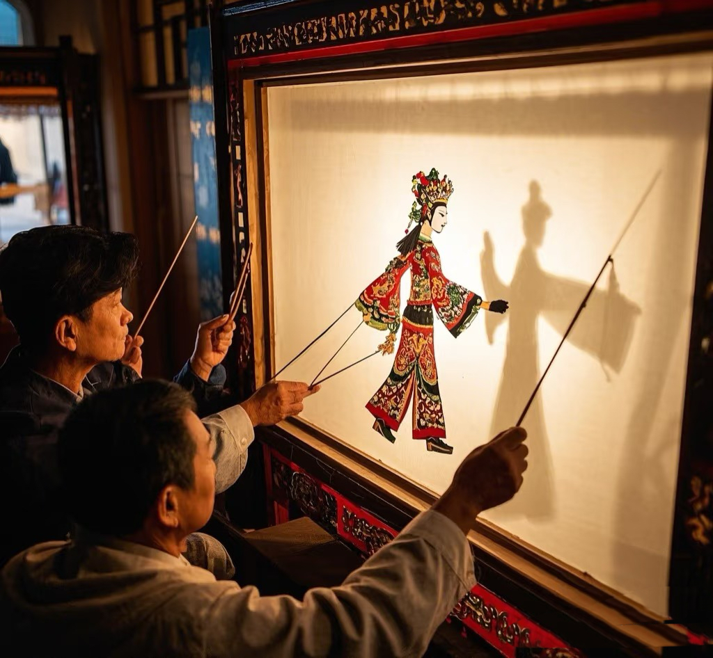
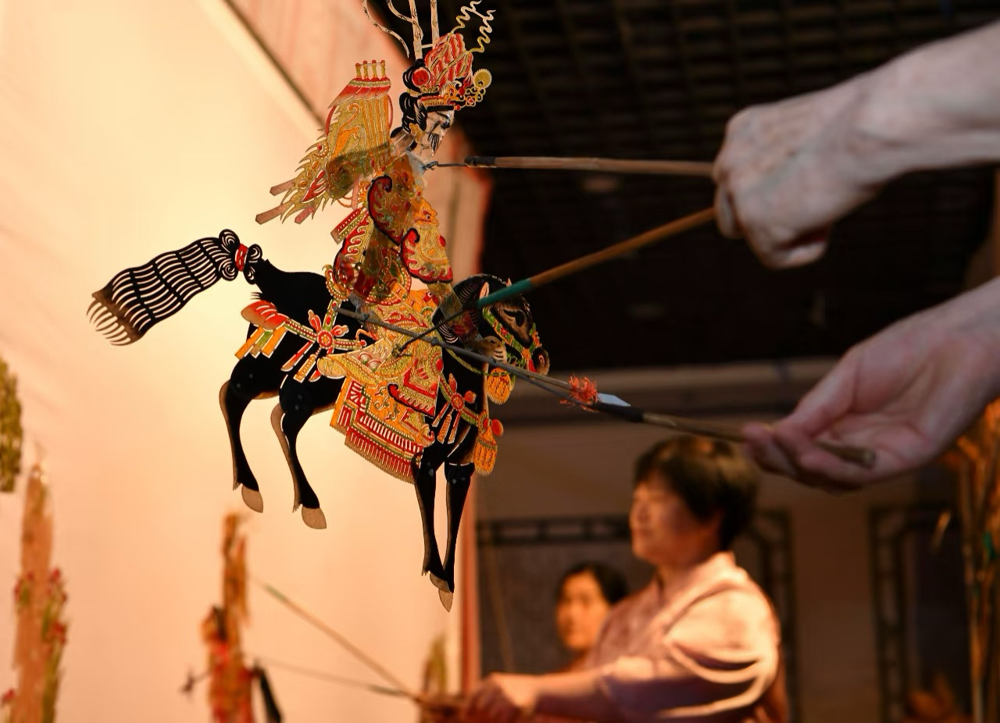
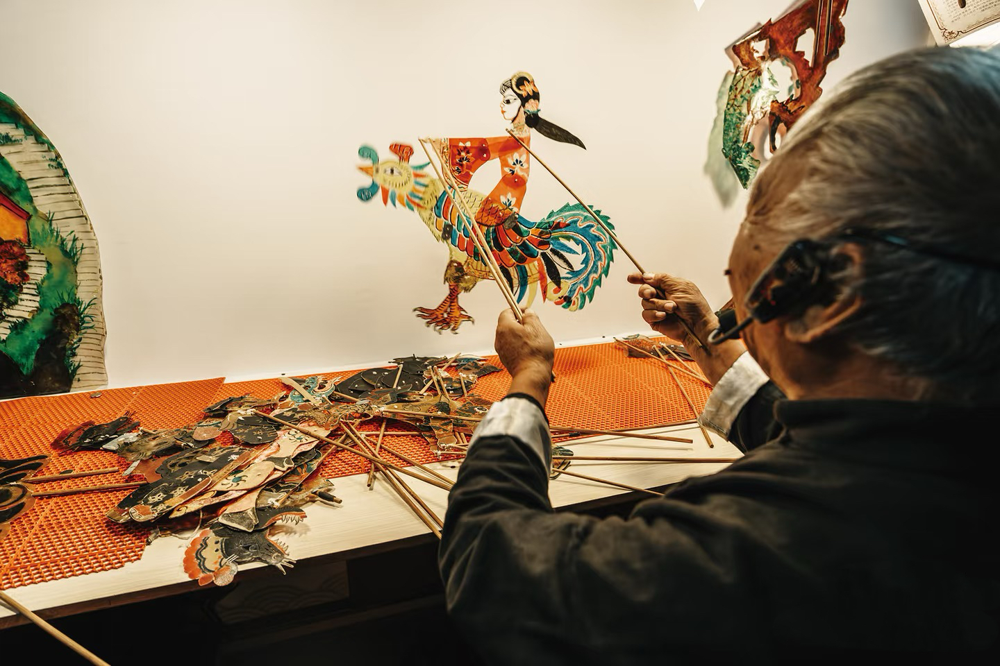

皮影戏的历史演变

传说的源起
皮影戏的起源，常被追溯至西汉武帝时期一个充满情感的宫廷故事。史载，宠妃李夫人早逝，武帝思念不已。 方士李少翁心生一计，用棉帛或皮革剪刻成李夫人的形象，在夜晚设置帷帐、点亮灯烛，请武帝遥望。 李夫人的身影在帐上摇曳生姿，仿佛魂魄归来，武帝见状，悲喜交加。这个“弄影还魂”的典故，虽然更近于方术， 却无意间奠定了皮影戏最核心的三个要素：光源、剪影和幕布，因此被后世尊为皮影戏的滥觞
从雏形到成熟
在佛教盛行的唐代，一种名为“变文”的说唱艺术（用以讲述佛经故事）开始流行，它为皮影戏提供了丰富的叙事蓝本。 同时，民间剪纸技艺蓬勃发展，工匠们开始尝试用素纸雕镂人形，进行简单的光影表演，称为“纸影戏”， 这使得皮影从宫廷秘术走向民间娱乐。到了商品经济空前繁荣的宋代，皮影戏迎来了它的第一个黄金时代。 在汴京和临安的勾栏瓦舍中，皮影戏成为最受欢迎的市民娱乐之一。不仅出现了“绘革社”这样的专业行会， 影人的材质也从未经处理的纸升级为更经久耐用的皮革，雕刻工艺日趋精美，表演内容也从神怪传说扩展到丰富的历史故事。

传播与深化
蒙古帝国建立了横跨欧亚的辽阔版图，皮影戏也随着蒙古大军的脚步， 被传播到波斯、阿拉伯、东南亚等遥远地域，对后来如土耳其的“卡拉格兹”影子戏等艺术形式产生了深远影响。 进入明代后，皮影戏的艺术内涵进一步深化。它开始与各地方言、音乐和戏曲声腔紧密结合， 形成了诸如“秦腔皮影”等早期地方风格，为清代流派林立奠定了基础。
艺术鼎盛与流派形成
清代是皮影戏艺术的全面鼎盛时期。无论是紫禁城的宫闱深处，还是遍布乡村的社火庙会，都能见到它的身影。 在数百年的传承与演化中，风格鲜明的几大流派最终成型：陕西皮影以其雕刻的精细繁复、造型的夸张大胆著称； 河北滦州皮影（驴皮影）则唱腔独特，影响遍及华北；而四川皮影则以“麻线命”的灵活操纵技巧闻名。 至此，皮影戏集雕刻、染绘、表演、唱白于一体，真正成为一门扎根于民间土壤的综合性艺术瑰宝。
